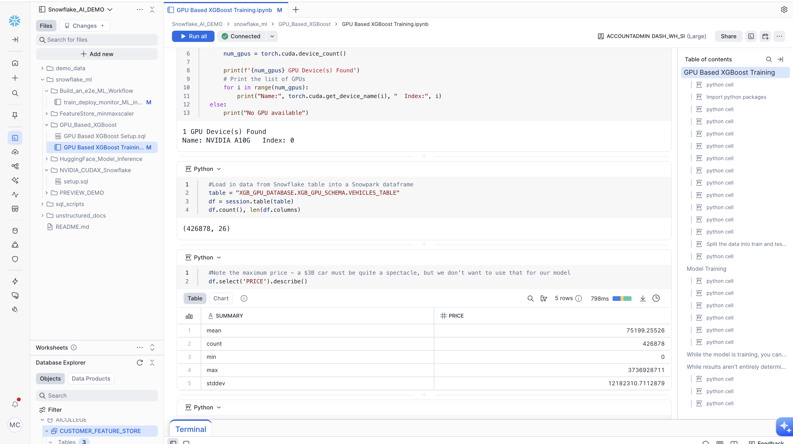
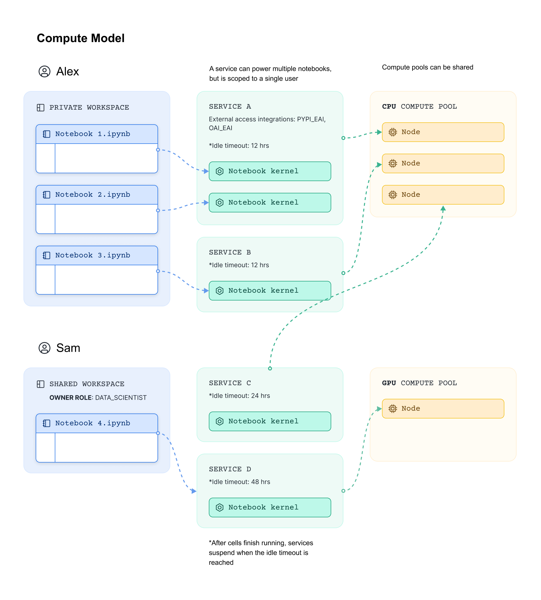
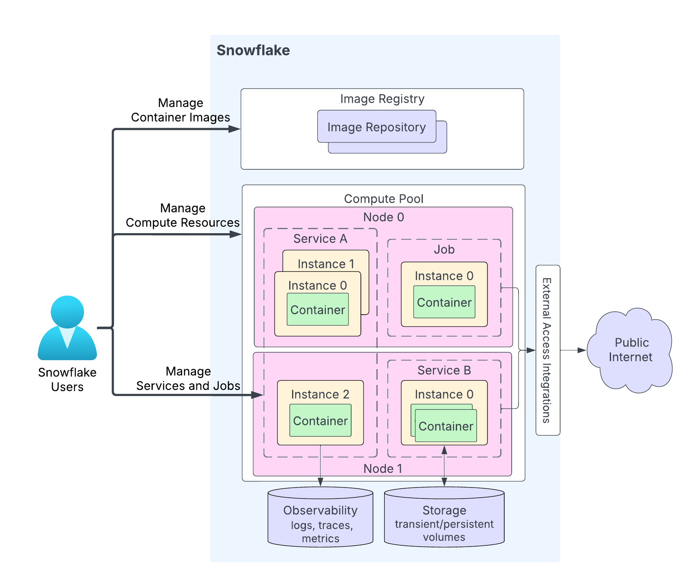

SELECT
notebook_name,
SUM(credits) AS total_credits
FROM snowflake.account_usage.notebooks_container_runtime_history
WHERE start_time >= DATEADD(day, -30, CURRENT_TIMESTAMP())
GROUP BY notebook_name
ORDER BY total_credits DESC;Snowflake Notebooks in Workspace
DISCLAIMER: Snowflake Notebooks in Workspace is in PuPr (Public Preview) at the time of writing this notebook (December 18, 2025).
Snowflake Notebook is a fully-managed Jupyter-powered notebook built for end-to-end data science and machine learning development on Snowflake data.
This includes:
Familiar Jupyter experience - Get the full power of a Jupyter Python notebook environment, directly connected to the governed Snowflake data.
Full IDE features: Easy editing and file management for maximum productivity.
Powerful for AI/ML: Runs in a pre-built container environment optimized for scalable AI/ML development with fully-managed access to CPUs and GPUs, parallel data loading, distributed training APIs for popular ML packages (e.g. xgboost, pytorch, lightGBM).
Governed collaboration: Enable multiple users to collaborate simultaneously with built-in governance and a complete history of changes via Git or shared workspaces.
In Snowflake, a notebook consumes compute resources through its configured virtual warehouses or compute pools.
In this blog we are focusing on Snowflake Notebooks in Workspace on a compute pool.

Deep dive: Workspace, Service and Compute Pool
Workspaces provides a unified editor for creating, organizing, and managing code across multiple file types that you can use to analyze data, develop models, and build pipelines.
A workspace is private to you but can be shared in order to allow collaboration.
Snowflake Notebooks in workspace run on Snowpark Container Services (SPCS) and a compute pool is required.
When a user run a notebook, Snowflake creates a notebook service which host the notebook kernel. Upon creation of a notebook service, the users can configure python version, Snowflake container runtime version (e.g. with CPU or GPU), compute pool, idle timeout and external access integrations.
As depicted in picture below, each notebook service is connected to a user and sits in a node on the selected compute pool. It is important to note that all notebooks connected to the same notebook service (e.g. SERVICE A in picture below) share the compute resources on that node.

How it works
Once the first notebook gets connected to a service on the compute pool, other notebooks can hook onto the same service instantly. Each service occupies one compute pool node.
The notebooks on the same service will share the compute resource on the compute pool node. Here, each notebook still maintains its own virtual environment.
Key things to consider:
Idle time: the Idle time is set on the container service. For example, if it is set to 4 hours, the container service automatically shuts down if all notebooks connected to it have stopped running for 4 hours.
external access integration - EAI: EAIs are managed on the container service which applies to all notebooks in the same Workspace.
%lsmagic:
%lsmagicis supported.requirements.txt: Specify package versions and ensure consistent environment setup by using
!pip install -r requirements.txtCheck versions here to make sure your package version specified is compatible with the supported version range.You can upload your wheel file by:
!pip install file_name.whl
Nice to know
You can import packages from stages, with:
from snowflake.snowpark import Session
import sys
session = Session.builder.getOrCreate()
session.file.get("@stage_name/math_tools.py","/tmp/")
sys.path.append("/tmp/")
import math_tools
math_tools.add_one(3)Limitations to consider (as per 2025-12-18):
plotly,altair, and other visualization packages that rely on HTML rendering are not yet supported.Notebooks in different Workspaces cannot share the same service.
Artifact Repo and Custom Images are in the roadmap.
Managing Snowflake Notebooks in Workspace
Below you see some considerations to take while using Snowflake Notebooks in Workspace, which include cost and monitoring capability.
Cost Aspects
A notebook consumes compute resources through its configured virtual warehouses or compute pools. To manage costs and ensure efficient operations, it’s important to monitor usage across individual notebooks, users, and the underlying compute infrastructure. This visibility helps ensure efficient operations and supports cost accountability throughout your environment.
Snowflake provides access to detailed usage data through ACCOUNT_USAGE views and system tables. This data can help answer questions such as:
- What is the hourly credit consumption per notebook?
- How frequently were notebooks run in the past week?
- Which users ran notebooks in the past month?
- Which compute pools or warehouses did notebooks use over the past week?
- What is the total credit cost of notebooks using a specific compute resource?
For a broader overview of compute-related cost management, see Exploring compute cost.
Query: Cost to run a specific notebook
Query: Total compute pool cost per notebook
SELECT
notebook_name,
compute_pool_name,
SUM(credits) AS total_credits
FROM snowflake.account_usage.notebooks_container_runtime_history
--WHERE compute_pool_name = '<example_cp_name>'
GROUP BY notebook_name, compute_pool_name
ORDER BY total_credits DESC;Query: Identify users who ran a specific notebook
SELECT
DISTINCT user_name,
SUM(credits) AS total_credits
FROM snowflake.account_usage.notebooks_container_runtime_history
--WHERE notebook_name = '<example_nb_name>';
GROUP BY user_name
ORDER BY total_credits DESC;from snowflake.snowpark.context import get_active_session
import matplotlib.pyplot as plt
session = get_active_session()
# Query the data
query = """
SELECT
user_name,
SUM(credits) AS total_credits
FROM snowflake.account_usage.notebooks_container_runtime_history
GROUP BY user_name
ORDER BY total_credits DESC
"""
df = session.sql(query).to_pandas()
# Create bar chart
plt.figure(figsize=(10, 6))
plt.bar(df['USER_NAME'], df['TOTAL_CREDITS'])
plt.xlabel('User')
plt.ylabel('Total Credits')
plt.title('Total Credits by User')
plt.xticks(rotation=45, ha='right')
plt.tight_layout()
plt.show()Compute Pool Concept
A compute pool is an account-level construct, analogous to a Snowflake virtual warehouse. The naming scope of the compute pool is your account. That is, you cannot have multiple compute pools with the same name in your account.
The minimum information required to create a compute pool includes the following:
- The machine type (referred to as the instance family) to provision for the compute pool nodes
- The minimum nodes to launch the compute pool with
- The maximum number of nodes the compute pool can scale to (Snowflake manages the scaling.)
By default, all workloads can run on a compute pool, such as:
- user-deployed: services and jobs
- workloads managed by Snowflake: notebooks, model serving, and ML jobs.
You can control which workloads run on those compute pools by using account-level parameters: Check ALLOWED_SPCS_WORKLOAD_TYPES and DISALLOWED_SPCS_WORKLOAD_TYPES to manage the workloads that can run on a compute pool.
Snowflake uses the placement group concept for fault isolation within Snowflake region. Check Compute Pool Placement for more information, especially in cases where you would like to have low latency between nodes for tightly coupled services.
Other important things to consider:
--SHOW COMPUTE POOLS;
SHOW COMPUTE POOLS;
SELECT
"instance_family",
"state",
COUNT(*) AS number_of_pools
FROM TABLE(RESULT_SCAN(LAST_QUERY_ID()))
GROUP BY "state", "instance_family"
ORDER BY "state", number_of_pools DESC;Services Concept
Snowpark Container Services lets you more easily deploy, manage, and scale containerized applications. After you create an application and upload the application image to a repository in your Snowflake account, you can run your application containers as a service.
A service represents Snowflake running your containerized application on a compute pool, which is a collection of virtual machine (VM) nodes.
There are two types of services: - Long-running services. A long-running service is like a web service that does not end automatically. After you create a service, Snowflake manages the running service. For example, if a service container stops, for whatever reason, Snowflake restarts that container so the service runs uninterrupted. (e.g. CREATE SERVICE command)
- Job services. A job service terminates when your code exits, similar to a stored procedure. When all containers exit, the job service is done. (e.g. EXECUTE JOB SERVICE command)
See picture below for an illustration, or in working with services for detailed info.

Important things to note:
While Snowflake might distribute instances of a service across multiple compute pool nodes, all containers within a single service instance always run on the same compute pool node.
You can create services via SQL, Snowflake Python APIs, Snowflake Rest APIs and also Snowflake CLI.
Make use of network policies for network ingress and external access integration for network egress.
Scenarios for using Snowpark Container Services
Common workloads are: - Batch Data Processing Jobs: Jobs like stored procedures across multiple job instances, and graphics processing unit (GPU) for computationally intensive tasks like AI and machine learning.
Service Functions: See an example here.
APIs or Web UI Over Snowflake Data: Deploy services that expose APIs or web interfaces with embedded business logic. Users interact with the service rather than raw data.
Check also some additional considerations for services.